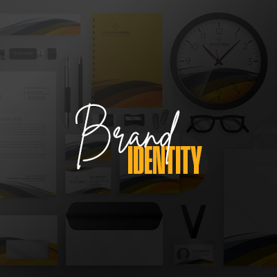

Brand Identity
A recognizable brand needs more than a logo. I build the visual system behind it. The colors, typography, layouts and guidelines that make everything feel like it belongs to the same brand.
Let's Chat
- Logo and visual identity systems
- Color palette and typography direction
- Brand assets and visual guidelines
- Consistent layouts across digital touchpoints